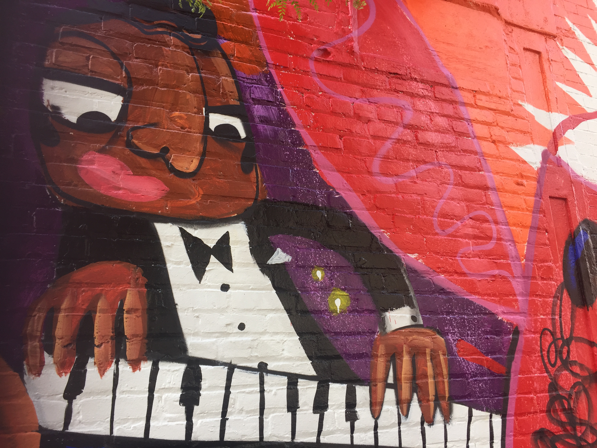

TRAVEL
Highway to Hell's Kitchen: An Alternative Route
Discover the underbelly of Hell's Kitchen inside one of its oldest second-hand dealers
by
Síle Moloney

Hell's Kitchen mural Photo by Síle Moloney
Here are some resources I used to find information:
Spokeo
Dataminr
Banjo
various Hell's Kitchen websites, as follows:
Hell's Kitchen NYC
Gang History
Property Shark
Community Meetings
Talking to People in my CD
Contact me:
Email me
Twitter